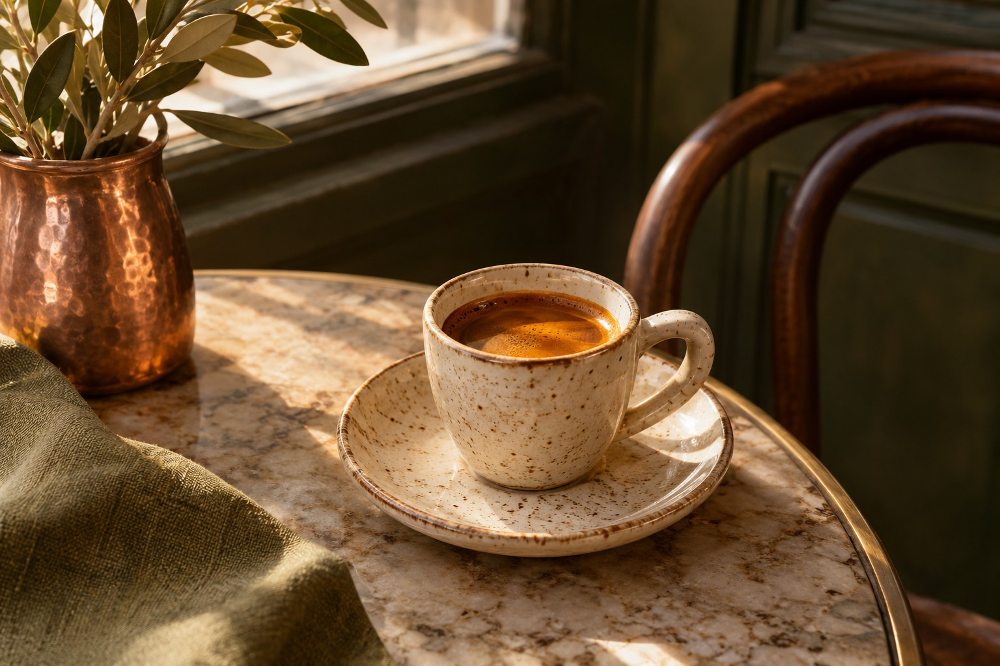
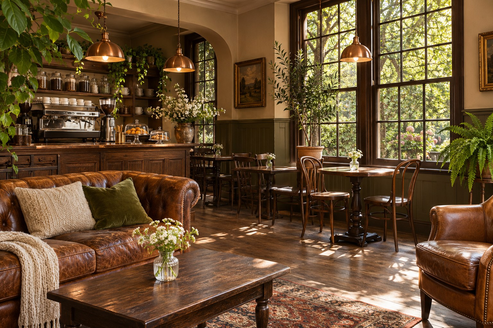
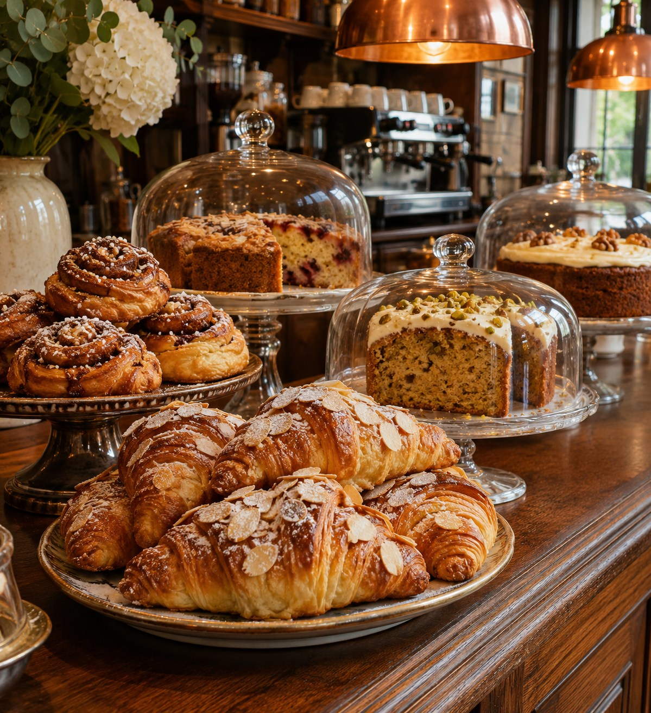
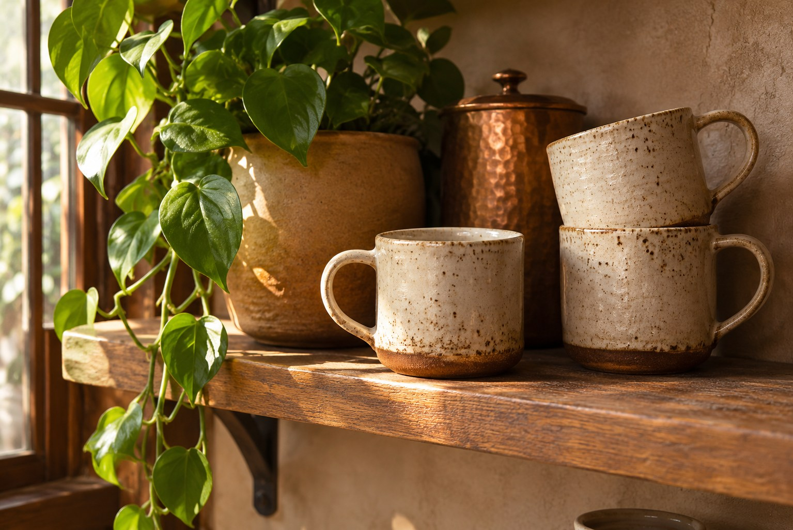
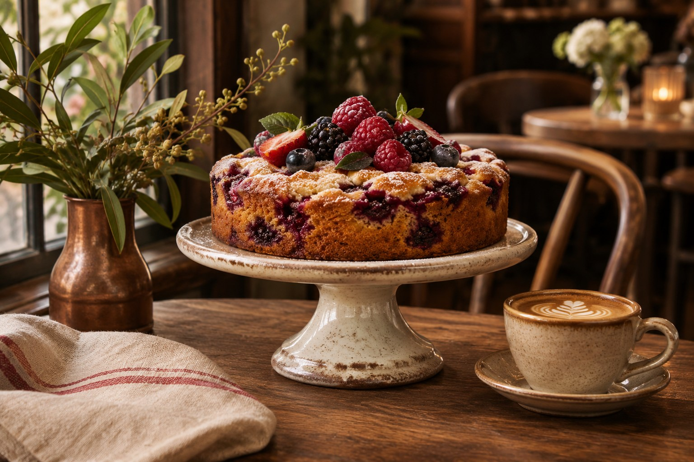
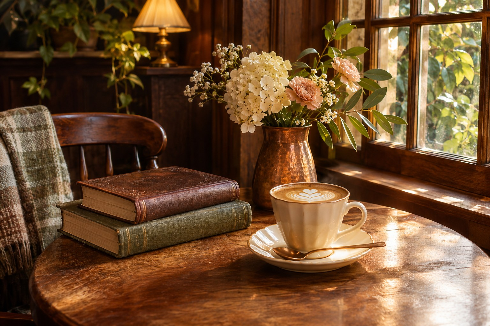
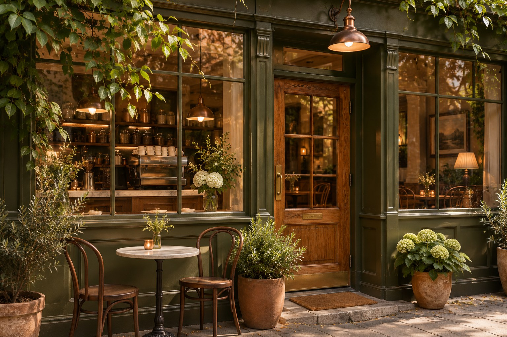

Espresso
Rich, bold and beautifully balanced.
COFFEEYOUR DAILY PAUSE
Your daily pause, poured with care.
THE EMBER & OAK IDEA
A traditional coffee shop concept built around good coffee, honest baking and the simple joy of time well spent.
Our story is illustrative. The business history and sourcing details are awaiting confirmation.
What matters to us →
Illustrative testimonials · not verified customer reviews.
“The coffee is consistently excellent and the atmosphere is just lovely.”
“Such a welcoming place. Beautiful bakes, friendly staff and proper good coffee.”
“My favourite coffee shop in town. Great coffee, great food, great people.”

Our intended approach · supplier and baking claims pending verification.
A considered approach to the beans in every cup.
Comforting pastries and cakes to brighten your day.
A moment of care, cup by cup, just for you.
A LITTLE AFTERNOON JOY
Seasonal bakes, classic comfort and the perfect coffee to match.
Discover the menu →


MAKE A LITTLE TIME
Good coffee, fresh baking and a welcoming space. We look forward to sharing the details.
View MenuAddress pending verification. Directions will be available once the location is confirmed.

To be confirmed
Business address, contact details and trading hours are placeholders. Please do not travel based on this prototype.Booking and walk-in arrangements are awaiting confirmation. Visit information will be updated once verified by the business.
Takeaway service is part of the proposed café experience, but has not yet been confirmed. Please check the verified menu and service details before visiting.
The final menu and dairy-free options are pending confirmation. For allergies, ask the team for verified ingredient and cross-contact information before ordering.